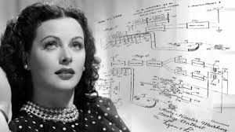
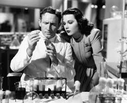

Hedy Lamarr
Hedy Lamarr, nome artístico de Hedwig Eva Maria Kiesler (Viena, 9 de novembro de 1914 — Altamonte Springs, 19 de janeiro de 2000), foi uma atriz e inventora austríaca radicada nos Estados Unidos. Em 28 anos de carreira, participou de mais de 30 filmes e fez uma importante contribuição tecnológica durante a Segunda Guerra Mundial, uma co-invenção, com o compositor George Antheil, um sistema de comunicações para as Forças Armadas dos Estados Unidos que serviu de base para a atual telefonia celular.[1][2] Em reconhecimento do valor de seu trabalho e da importância da tecnologia por ela inventada, seu nome foi postumamente inserido no National Inventors Hall of Fame em 2014.[3]

Biografia
nasceu como Hedwig Eva Maria Kiesler, em Viena, na Áustria-Hungria, em 9 de novembro de 1911. Era a filha única de Gertrud Lichtwitz Kiesler (1894–1977), uma pianista de família judaica de Budapeste, vinda de uma família de classe média, e de Emil Kiesler (1880–1935), gerente financeiro de um grande banco de Viena.[6] Seu pai nasceu em uma família de judeus da Galícia em Lemberg, hoje a cidade de Lviv, na Ucrânia.[6][9] Ainda que sua mãe tivesse origem judaica, Gertrud se converteu ao catolicismo por influência de seu primeiro marido e acabou criando Hedy como católica, ainda que ela não tivesse sido formalmente batizada.[9]
O interesse na atuação veio desde cedo, quando Hedy, ainda criança, assistia a peças de teatro e a filmes. Estudou balé e piano até os 10 anos e aos 12 anos, ganhou um concurso de beleza em Viena. Hedy era muito ligada ao pai, com quem tinha conversas sobre política, ciência, tecnologia e ele foi uma grande inspiração para sua invenção futura.[6][9] Seu pai faleceu em 1935 devido a problemas cardíacos. Depois da Anschluss, Hedy, que já morava nos Estados Unidos, ajudou a mãe a sair da Áustria e se mudar para o Canadá e depois para os Estados Unidos, onde se tornou cidadã norte-american
Carreira na Europa
Usando o nome de Hedy Kiesler, ela começou a ter aulas de atuação em Viena. Um dia, ela falsificou uma permissão assinada pela mãe e foi bater na porta da Sascha-Film, uma produtora austríaca que a contratou aos 16 anos como secretária do diretor. Um dia, ela ganhou um papel de figurante no filme Money on the Street (1930) e depois teve um papel pequeno em Storm in a Water Glass (1931). O produtor Max Reinhardt a escalou para uma peça chamada The Weaker Sex, apresentada no Theater in der Josefstadt, um teatro em Viena. Ele se impressionou com o trabalho de Hedy e a chamou para voltar com ele a Berlim, onde ele morava.[6]
Hedy nunca trabalhou em nenhum de seus filmes rodados em Berlim. Depois de conhecer o produtor russo de teatro Alexis Granowsky, ela foi escalada para fazer sua estreia como protagonista em The Trunks of Mr. O.F. (1931), junto de Walter Abel e Peter Lorre. Granowsky mudou-se para Paris, mas Hedy permaneceu em Berlim trabalhando. No filme No Money Needed (1932), uma comédia, Hedy estrelou como a atriz principal, digerida por Carl Boese.[6][9]
